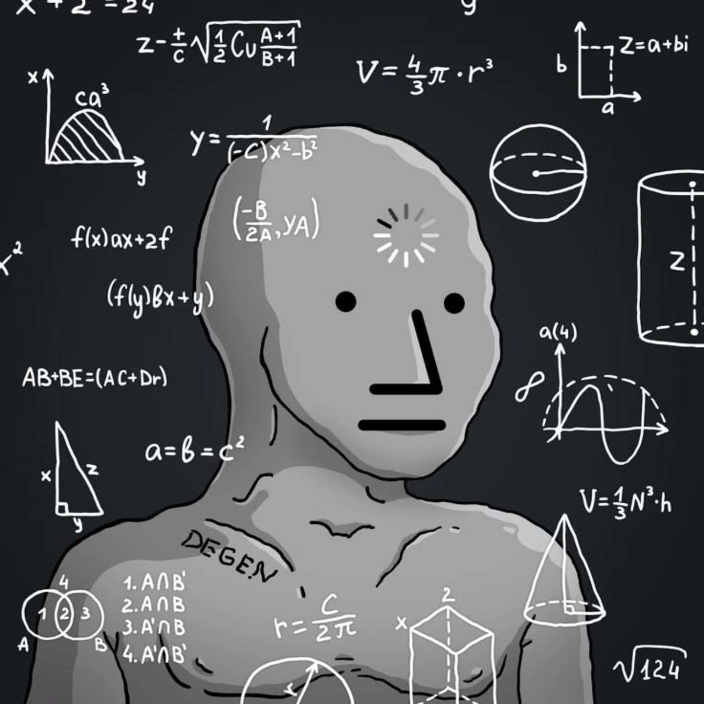
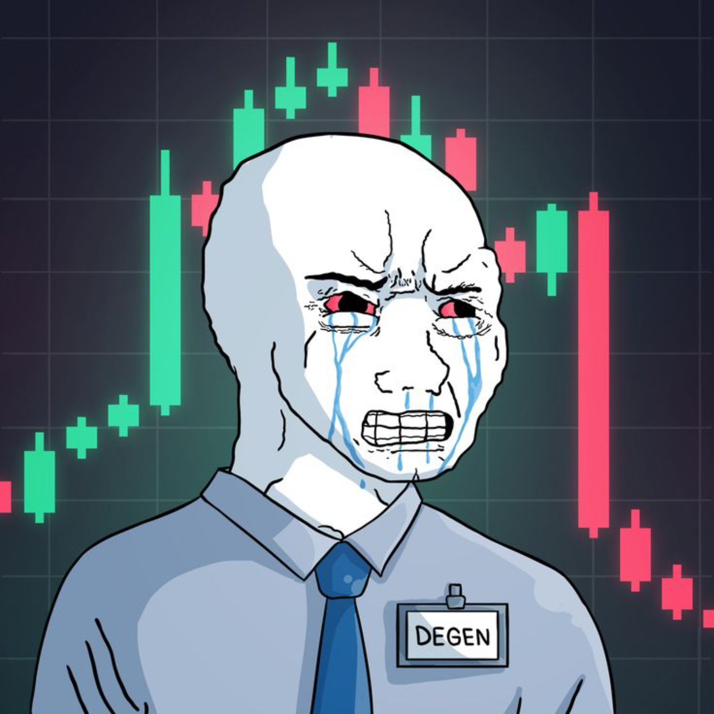
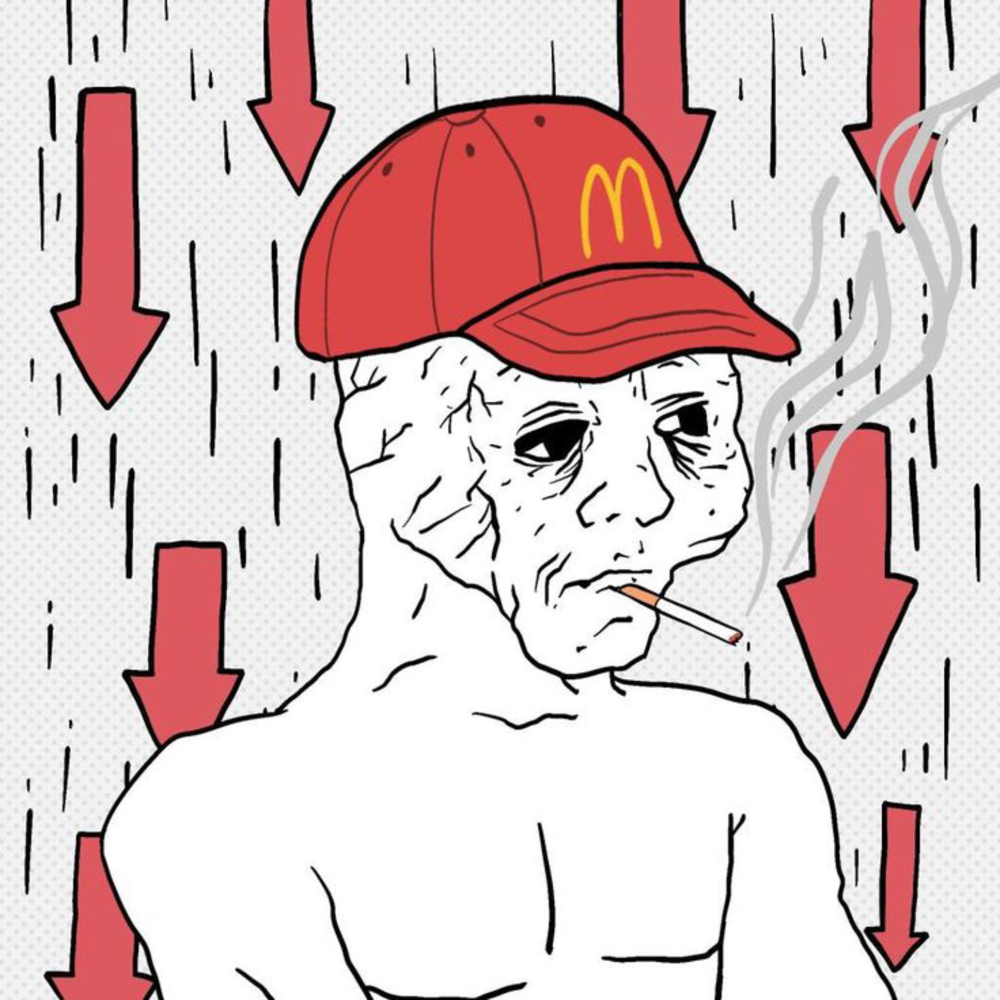

THE FACE THEY NEEDED
At first, Wojak was only a face. A tired shape the internet used when words were not enough. He became every loss, every late night, every silent laugh, every failure people were too embarrassed to explain.

At first, Wojak was only a face. A tired shape the internet used when words were not enough. He became every loss, every late night, every silent laugh, every failure people were too embarrassed to explain.

Then came the charts, the pumps, the rugs, and the candles that broke warriors. Every red candle left a mark. Every green candle brought hope. The arena remembered all of it.

JAKWO became the wall where memes, brands, coins, creators, and trolls fight for visibility. You can be seen. You can be buried. But if you enter, you become part of internet history.